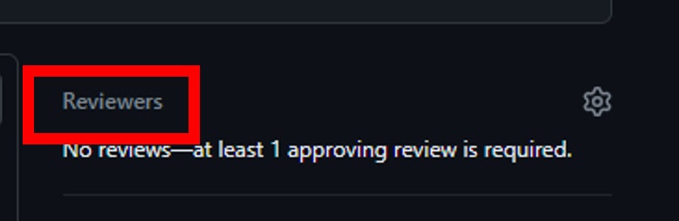

LAPCAP Bible
LAPCAP Bible
Documentation Overview
The below sets out the full set of documentation for LAPCAP, alongside where it can be found. In some cases, it may be stored in multiple locations and care should be taken to ensure both copies remain up to date.
In general, documentation should be kept as close to the code as possible, for ease of access. However, this may not always be possible.
Overarching Documentation
| Description | Github Location | Sharepoint Location | |
| Quality Assurance Plan | How, when and by whom model, data or assumption changes will be assured. | - | 02 LAPCAP QA Plan.docx |
| Signoff Log | Log of signoffs obtained for each version of LAPCAP. | - | 03 LAPCAP Signoff Log |
| Template Assumptions Log | A blank version of our assumption log for use on any new modules. | - | 04 TEMPLATE modulename assumptions_data_log.xlsm |
| Team How To’s… | Describes practical steps required for various team processes. | FPC Coding Guidance | - |
Version Specific Documentation
In the 00 Model Master folder, each model version will have a folder. This will contain all the documentation specific to that version.
Whilst the version is still under development this folder will have “- IN PROGRESS” appended to its name.
Once the version is completed (tagged on Github and merged into main), the folder will have the “- IN PROGRESS” label removed, a zip file of the code and a zip file of the data inputs saved into it and should not be edited from that point onwards.
Instead, a new “- IN PROGRESS” folder should be created, with below documents from the previous version copied into it, that can then be edited alongside changes to the code for the new version.
| Description | Github Location | Sharepoint Location | |
| Technical Document | |||
| Assumptions Logs | |||
| Data Log | |||
| User Guide | Guidance on how to practically run and control LAPCAP. | ||
| Validation Docs | CAT WORKING ON | ||
| CHANGE LOG? | CAT INVESTIGATING IN VALIDATION TICKET |
Modelling and Assurance Process
This document is a plan of how, when and by whom model, data or assumption changes will be assured. This includes a list of responsibilities relating to the model, who the model owner is, the governance structure and decision-making process supporting the model.
The below diagrams give an overview of the processes, with more detail included in later sections.
Coding Process
INSERT PICTURE
Signoff Process
INSERT PICTURE
Stakeholder Groups
- Senior Responsible Officers (SROs)
- Director of Resources & Waste (Emma Bourne) and equivalents in the Devolved Administrations (David McPhee, Rhodri Asby, Shane Doris).
- pEPR Project Board
- Senior level oversight and support for the delivery of the joint UK-wide pEPR. Chaired by Dexter Davis.
- Model Owner
- G6 head of Fees and Payments Calculator team (Tristan Ibrahim).
- Advisory Groups
- Analytical Board - consists of senior analysts from England, Wales and Scotland
- Technical Working Group (TWG) - comprising expert waste advisors to Defra and the devolved administrations
- Local Authority Waste Officer Sounding Board – selected Waste Officers from local authorities across the UK
- Government Actuary’s Department – to date external QA has been provided by GAD
- Fees and Payments Calculator modelling team
- Made up of members of the Government Operational Research profession, ensuring necessary modelling skills.
Named individuals correct as of 3/2/2025
Coding Process Detail
1. Decide to change code
The modelling team, led by G7s, will identify the most important changes needed ahead of the next release of modelling outputs. They may choose to make use of the Analytical Board, TWG or Sounding Board in determining this. They may also choose to seek signoff of their plans from the model owner or project board, or to simply make them aware, to ensure planned changes are expected.
An agile methodology using Jira is then used to plan out the delivery of these changes.
2. Make changes to code
Through R Studio and Github changes are made to the existing LAPCAP model. This will be achieved through standard Git practice, e.g. branching off from the dev branch. Instructions for how to do this can be found in the new starter section.
The changes required should be clearly laid out in the relevant Jira ticket.
If the changes made involve adding, removing or changing an assumption, data import or code logic, then the modelling team member must update the relevant assumption log, data log (?) or the technical document, code comments and roxygen headers.
How to change an assumption
INSERT ASSUMPTIONS CHANGE INSTRUCTIONS
How to change an data input
Data Pipeline
The data pipeline should be run to update the data folder prior to a new version of the model being tagged (ensure to restart your R session and clean your environment before running the pipeline)
Before the new version is tagged, you need to change the model_version parameter in the data pipeline and run it, and change the model_version parameter in run_LAPCAP_model, then push these changes before tagging the version
If you are attempting to overwrite a folder then you will be asked to confirm – you should be sure that you want to overwrite the folder as this could prevent rolling back in the future
Ensure that people are aware of a new version being tagged so they can rebase if necessary
Versioning Vx.y.z
The first number, x, should be updated when figures and published externally
The second number, y, should be updated when figures are shared internally (e.g. Simpler Recycling)
The third number, z, should be updated when there are changes to the data or data pipeline
These versions should be tagged on dev on github to allow easy rollback to model versions
When numbers are published externally and the first number updated, dev should be merged into main
How to write a unit test
INSERT UNIT TEST INSTRUCTIONS
Locations for assumption log, data log or the technical document can be found in 01 Documentation Overview.docx, and each includes instructions for how to use it.
Once complete the modelling team member should make a pull request and request a review from another member of the team. The below template should be filled out when making a pull request:
INSERT NEW PULL REQUEST TEMPLATE
How to make a pull request
Here are the step-by-step instructions to submit a pull request:
Follow the steps on the ‘How to edit Github code’ to make the changes for your ticket
Then go to the relevant repo on Github and navigate to your branch
- Use either the branches drop down or click on ‘x branches’ to go to the branches page and select your branch.
If your push was recent there may be a pop up allowing you to ‘compare and pull request’, if not then click ‘Contribute’ and ‘Open pull request’.
Now check your pull request is set up correctly:
Make sure you are merging to the correct branch, this will usually be dev (for code in development) or sometimes main if it has been fully quality assured.
Click ‘Reviewer’ and select the person who has agreed to review your code.

Make sure you have completed the requirements and fill out the fields in the pull request template.
Then you can click ‘Create pull request’.
- Once you have created the pull request you should move the ticket to ‘For Review’ on Jira.
Your reviewer will then inspect your code and may ask you some questions or suggest some changes. Once you have responded to these they will approve your pull request and you can merge your changes!
- You will also need to check there are no ‘merge conflicts’. This is where someone has changed the same files as you and so you need to agree with that person what are the correct changes and modify accordingly, Github will read ‘Able to merge’ indicating there are no conflicts.


3. Verify the changes
Once assigned a review the team member must complete the full checklist provided by the principle analyst. It is also the QAers must also review the list critically and ensure that it is both appropriate and sufficient. If the QAer feels otherwise they must raise this with in the first instance the principle analyst and then failing this the model owner.
You should use the checklist below to ensure you carry out all necessary checks:
INSERT NEW PR CHECKLIST
Reviewers should trace the full logic of the code, both by reading through it and by running it and spot-checking intermediate data frames. They should inspect any relevant data imports both in R Studio and directly from their original source. They should examine model outputs before and after the changes to ensure they make sense. They should make sure they are able to replicate any processes or calculations in the code.
Reviewers should leave comments via GitHub, to ensure a record of verification and validation. GitHub has several features to help with this such as filtering changes by commit or file type, marking scripts as viewed, making direct code suggestions and bundling many comments into one review.
These reviews may go through one or more cycles of requesting changes, in order for the reviewer to be happy. GitHub has functionality to enable this.
How to do a code review
This Github code review tutorial shows you how to review a pull request, or you can follow the steps below.
Follow these step-by-step instructions to do a proper code review:
Navigate to the ‘pull request’ that has been assigned to you. Read the description provided and use the checklist to aid your review.
Switch to the ‘Files changed’ tab to see the changes made, here you can make comments and suggestions as you see fit by clicking the blue plus to the left of the line you want to comment on.
- Make sure to tick ‘Start a review’ rather than ‘Add single comment’.
- Github has lots of functionality to make this process easier, including being able to mark scripts as ‘Viewed’ and limiting changes to certain commits.
- You should also run the code in R Studio and check the relevant QA log has been updated.
When you are ready click ‘Finish your review’ add a summary comment and then click ‘Submit review’. You may choose to leave comments to be responded to, suggest changes to be made or simply approve the pull request straight away.


4. Merge changes into dev branch
Before merging, the modelling team member should run the model. They should then add a set of outputs to the OUTPUT CHANGE LOG (RENAME), this ensures we are able to explain any changes in outputs from one publication to another.
TO ADD LINK TO OUTPUT CHANGE LOG (RENAME)
Once approved, changes should be merged into the dev branch. This may require resolving merge conflicts.
Signoff Process Detail
SIGNOFF LOG?
1. Model development complete
Once all changes required for a publication or sharing of the model are complete, the team will undertake the following steps.
Multiple pull requests will have been merged into dev (e.g. the above coding process will have been repeated multiple times) and these will all receive signoff together.
There are some circumstances where the full signoff may not be required for instance, sharing the model internally, this is left to the judgment of the model owner.
2. Model owner signoff
The model owner should sign off on the following documents, which should have been updated:
VALIDATION STUFF (PROCESS TBD)
VERIFICATION STUFF (PROCESS TBD)
CHANGE LOG (RENAME)
Technical Document
Assumptions Logs
Data Log (?)
The model owner does not necessarily have to review all of these themselves; they may utilise the advisory groups to offer assurance. For instance, in the past TWG have assured on assumptions logs.
The model owner’s signoff for that model version should be stored in SIGNOFF LOG (EMAIL EVIDENCE).
3. SRO signoff
Project board, acting on behalf of the model SROs, should signoff the model version for publication.
It is unlikely that members of project board will review any of the model or its documentation themselves, however copies should be shared so they have the option to, and can delegate to members of their organisation.
Instead, summaries of changes, visualisations of overall outputs and assurances from advisory groups may be presented. Exactly what is required may depend on the specific changes being signed off, so is left up to the judgment of the model owner.
There may be an additional stage of parameter setting, at this point in the approvals process, especially for the first outputs for each new year of EPR.
The project board signoff for that model version should be stored in SIGNOFF LOG (MEETING MINUTES AS EVIDENCE?).